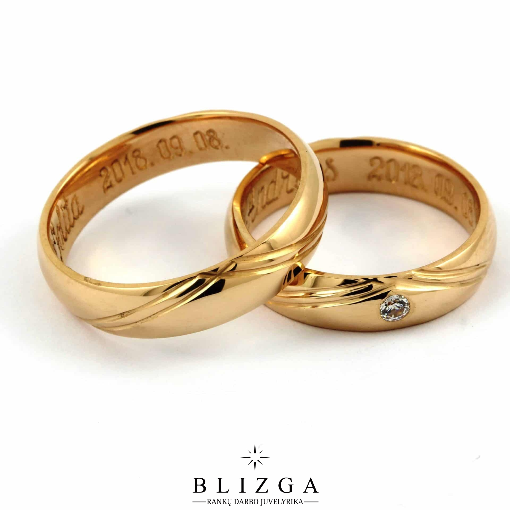

Welcome to žiedai
Trollbeads | Žiedai - Trollbeads.lt
2020.10.29 13:03Skip to main content Susisiekite su Mumis Pageidavimų sąrašas Parduotuvės Mano Paskyra Prisijungti Registruotis Pakeisti Šalį Menu 0 vnt. Ieškoti Trollbeads 0 vnt. PARDUOTUVĖ Visa kolekcija Nauji produktai Karoliukai Apyrankės Užsegimai „Bangle“ „Stabdžiukai“ Vėriniai Pakabukai Auskarai Žiedai Plaukų aksesuarai Aksesuarai juvelyrikai Pradėkite nuo... Karoliukų medžiagos Stiklo karoliukai Sidabro karoliukai Akmeniniai karoliukai Aukso karoliukai Vario karoliukai Gintaro karoliukai Cirkonio karoliukai Deimantų karoliukai Perlų karoliukai Porceliano karoliukai VYRAMS Kampanijos vyrams Geriausia versija #TROLLBEADSMEN Saulėti nuotykiai Tėčio diena Kolekcijos vyrams Naujausi aksesuarai Karoliukai Apyrankės Kaklo papuošalai Stiliaus galerija DOVANŲ IDĖJOS Pagal kainą Iki 50 100 100-200 200+ Jos stilius Bohemiškas Klasikinis Spalvingas Prabangus Modernus Gyvenimo aistra Keliautojai Gyvūnų mylėtojai Kulinarija Gėlės Rinkitės Žalią! Pasakos Meilė ir romantika Gamtos mylėtojai Dvasingumas Zodiako ženklai Ypatinga proga Populiariausios Dovanų rinkiniai Širdelės Mamos diena Gimtadienis Vestuvės Sukaktys Helovinas Nauja gyvybė Abiturientams/Absolventams Dovanų čekiai Internetinės parduotuvės dovanų čekiai Salelių dovanų čekiai KAMPANIJOS IR KOLEKCIJOS Kampanijos Tavo Trollbeads Istorijos Pradžia Spinduliuokite Unikalumu Prasmingas Sidabras Trollbeads Triukai Neprilygstantys Vėriniai Mėnesio Apyrankė Kolekcijos Iš Meilės... Rudens Harmonija Žmonių Karoliukas 2020 Žmonių Unikos 2020 Trollbeads Diena 2020 Vasaros Spalvos Kartu Įveiksime Viską Meilės Istorijos NUO 1976 m. Trollbeads Muziejus 1976-1985 1986-1995 1996-2005 2006 - 2015 2016 - 2025 Mūsų istorija Trollbeads Mantra Kas yra Trollbeads? Medžiagos ir gamyba Mūsų atsakomybė Susipažinkite su dizaineriais Renginiai DALINKIS KALĖDINIU ATVIRUKU PASKUTINĖ GALIMYBĖ YPATINGI PASIŪLYMAI Mano Paskyra Prisijungti Registruotis Parduotuvės Pakeisti Šalį Pageidavimų sąrašas Susisiekite su Mumis PARDUOTUVĖ Visa kolekcija Žiedai Jūsų paieškos rezultatai pagal
Žiedai
Žiedai, prilygstantys meno kūriniui ir žavintys miniatiūrinėmis detalėmis, sukurti išraiškingoms rankoms. O Fantazijos žiedą papuošę mėgstamu karoliuku, kasdien susikursite spalvingą įvaizdį.
Patikslinti Jūsų rezultatus pagal:
PARDUOTUVĖPagrindinė medžiaga
Auksas SidabrasMedžiaga
Akmuo Auksas Perlai Sidabras StiklasSpalva
Auksinė Balta Geltona Juoda Mėlyna Oranžinė Pilka Raudona Rožinė Ruda Sidabrinė Violetinė ŽaliaDizaineris
Eske Storm Gitte Bjørn Jens Nielsen Kim Buck Lise Aagaard Louise Rimpler Mette Saabye Ragnar R. Jørgensen Søren Nielsen Trollbeads Design Group PARDUOTUVĖPagrindinė medžiaga
Auksas SidabrasMedžiaga
Akmuo Auksas Perlai Sidabras StiklasSpalva
Auksinė Balta Geltona Juoda Mėlyna Oranžinė Pilka Raudona Rožinė Ruda Sidabrinė Violetinė ŽaliaDizaineris
Eske Storm Gitte Bjørn Jens Nielsen Kim Buck Lise Aagaard Louise Rimpler Mette Saabye Ragnar R. Jørgensen Søren Nielsen Trollbeads Design Group 2018 2019 2009 2017 2015 2016 2008 2020 Rodyti viską Surasti Iš naujo Rodo 1 - 40 iš 40 Rezultatai Suskirstyti pagal: Naujausi Kaina: Nuo mažiausios iki didžiausios Kaina: Nuo didžiausios iki mažiausios Populiariausi Rodo 1 - 40 iš 40 Rezultatai Undinėlė, Fantazijos Žiedas € 115,00 Bohemiškas Fantazijos Žiedas € 65,00 Elegantiškas Fantazijos Žiedas € 65,00 Širdelė, Žiedas € 55,00 Savojos mazgas, žiedas € 55,00 Džiaugsmas Slapukas, Žiedas € 55,00 Žydinti Gėlė, Žiedas € 115,00 Subtilusis Žiedas su Perlu € 65,00 Perlo Žiedas su Kristalais € 65,00 Žiedas su Rausvuoju Perlu € 85,00 Muziejus Žiedas su Pilku Perlu € 85,00 Žiedas su Baltuoju Perlu € 85,00 Žvaigždė, Fantazijos Žiedas € 65,00 Pintas Fantazijos Žiedas € 65,00 Veneros Gėlė, Žiedas € 85,00 Fantazijos Žiedas € 65,00 Žiedas su Kaspinu € 65,00 Žiedas su Briaunotu Citrinu € 175,00 Ramus Atokvėpis, Žiedas € 85,00 Sėkmės Žiedai, Žiedas € 85,00 Aurora Žiedas € 85,00 Mėlynoji Gėlelė, Žiedas € 85,00 Muziejus Ažūrinis Laumžirgis, Žiedas € 65,00 Pastovumas, Žiedas € 55,00 SAVE 25% Nuotakos Vainikas, Žiedas € 55,00 Trolio Žiedas € 55,00 Karaliaus Karūna, Žiedas € 65,00 Stiprybė, Drąsa ir Išmintis, Žiedas € 115,00 Varliukas, Žiedas € 65,00 Gudobelė Su Perlo Akimi, Žiedas € 85,00 Amžinai Tavo, Žiedas € 215,00 Karališkoji Karūna Su Auksu, Žiedas € 215,00 Saulutės Žiedelis, Žiedas € 215,00 Trolis, Žiedas € 1.500,00 Fantazijos Žiedas „Undinėlė“ su Labradoritu € 180,00 Bohemiškas Fantazijos Žiedas su Kvarcu Akmeniu € 130,00 Gražus Gyvenimas, Elegantiškas Fantazijos Žiedas € 110,00 Vyšnių Žydėjimas, Pintas Fantazijos Žiedas € 110,00 Elegantiškas Fantazijos Žiedas su Serpentinu € 130,00 Meilės Brangakmenis, Žiedas € 120,00 Rodo 1 - 40 iš 40 Rezultatai Suskirstyti pagal: Naujausi Kaina: Nuo mažiausios iki didžiausios Kaina: Nuo didžiausios iki mažiausios Populiariausi Rodo 1 - 40 iš 40 Rezultatai AtgalInformacija klientams
Pristatymas Pirkimas internetu Sužinokite savo dydį Susisiekite su mumis Artimiausia parduotuvėMano Trollbeads
Mano profilis Mano užsakymai Mano pageidavimų sąrašas Mano papuošalų dėžutė Papuošalų priežiūraApie
Karjera Verslo partneriams Mūsų pasauliniai partneriaiTrollbeads šiandien
Trollbeads istorija prasidėjo 1976 m. Danijoje, kai buvo sukurtas pirmasis sidabro karoliukas. Nuo tada kolekcija stipriai išaugo, atsirandant apyrankėms, įvairiems karoliukams, vėriniams, pakabučiams bei kitiems papuošalams. Kiekvienas karoliukas turi savo reikšmę bei istoriją, yra sukurtas rankomis, jog būtų unikalus ir išskirtinis. Išsirinkite tuos, kurie Jums primins gražiausias akimirkas, suteiks reikiamos energijos, virs talismanais ar tiesiog gražiai spindės ir taip išreikškite savo asmenybę bei atspindėkite individualią gyvenimo istoriją!
Susisiekite su mumis
UAB „Trollbeads Baltics“
Draugystės g. 19
Kaunas, LT- 51230
Lietuva
+370 617 41179
info@trollbeads.lt
Dėkojame prisiregistravus
Sveikiname, Jūs sėkmingai prisiregistravote!
